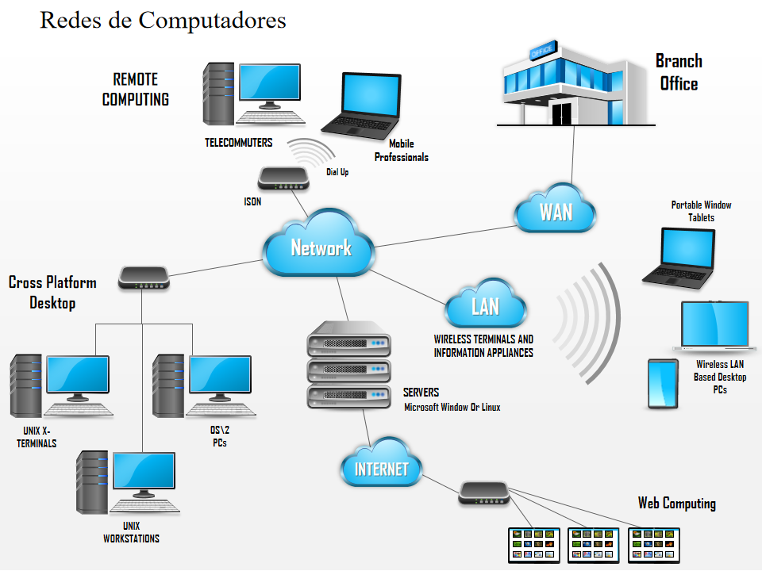
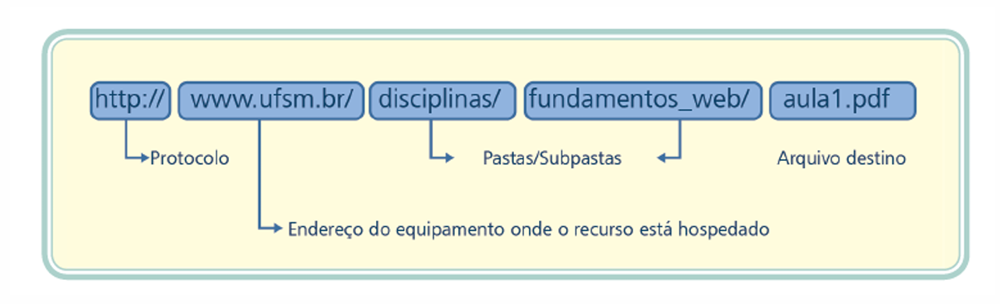

Conjunto de computadores interligados por um sistema de comunicação que
permita a transmissão e recebimento de dados
para garantir o acesso e troca de informações entre pontos fisicamente
distantes

Internet: Rede global de redes de computadores interconectadas que usam o protocolo TCP/IP para providenciar uma variedade de recursos e serviços
Como um recurso é identificado em um servidor

Prox Tema(Standards)